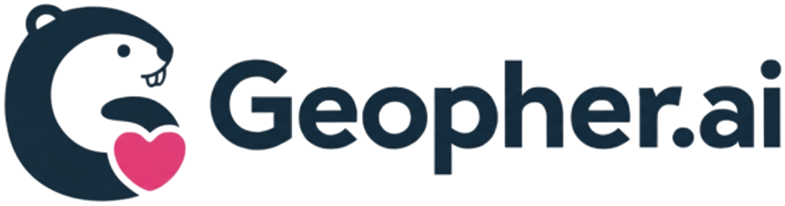
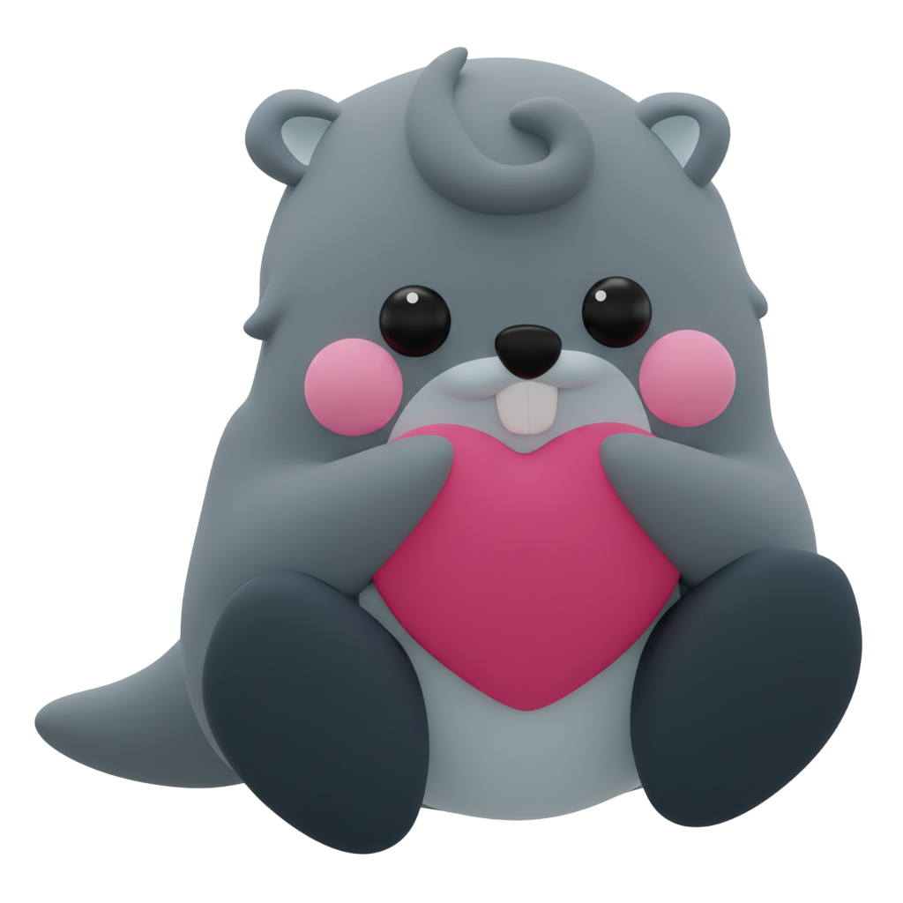
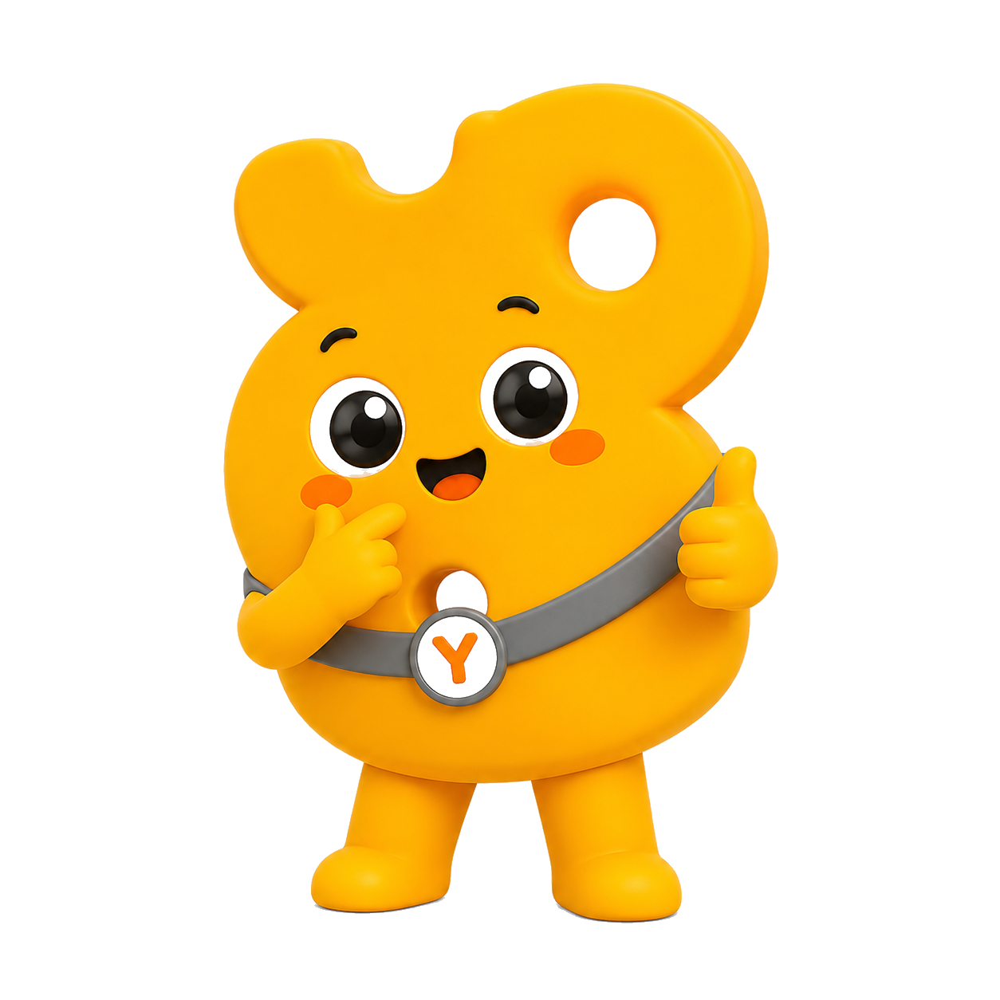
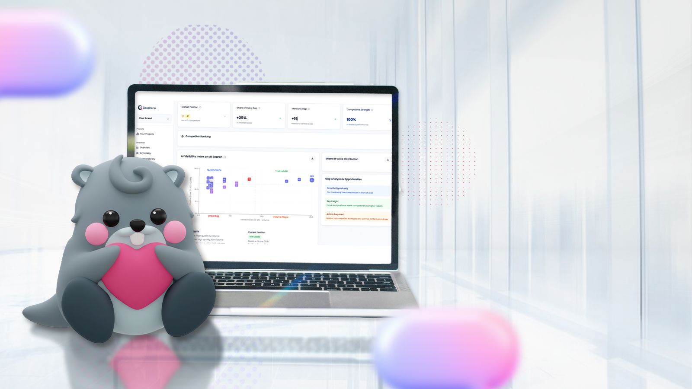
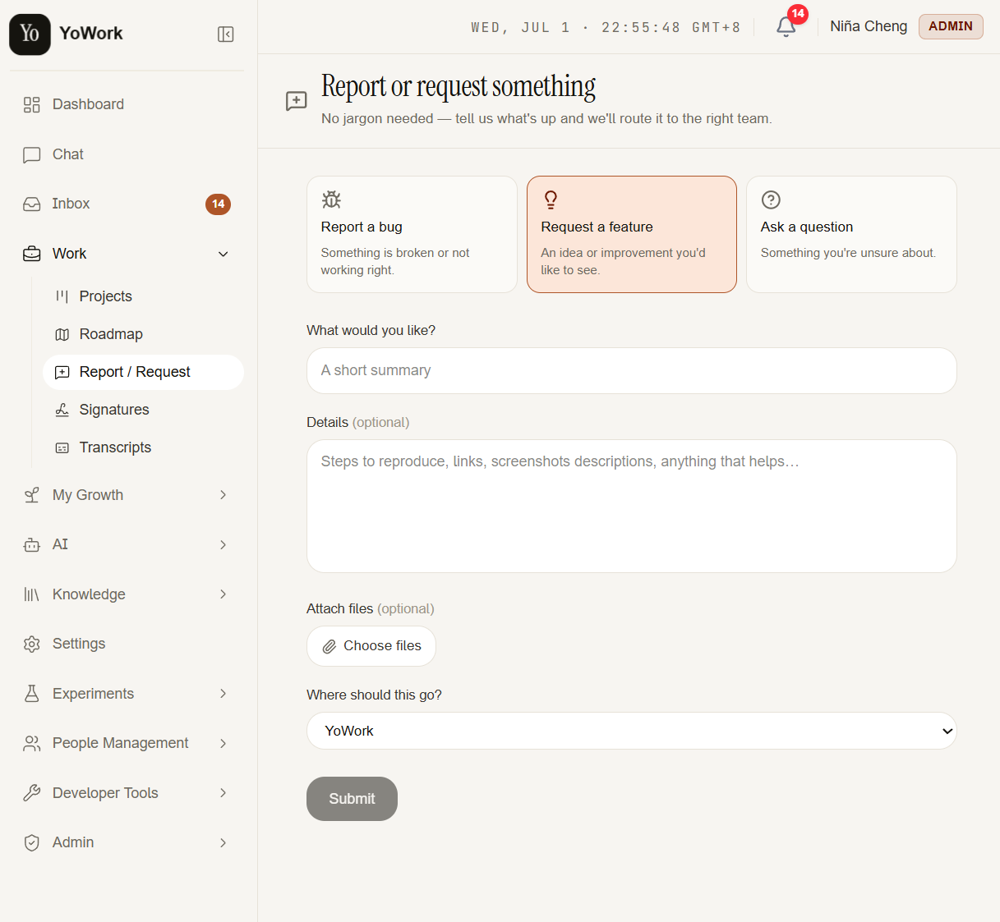

Five upgrades across YoWork and Geopher — faster e-signing, Work Board refinements, a people-first dashboard, Xendit payments, and cleaner brand analytics.

The native e-signature platform already centralizes approvals — PDF field placement, multi-signer flows, delegation, full audit trails. Three updates make it faster and more open:

One action completes every field assigned to you — no more clicking through them one at a time.
Send the same document to many recipients in one go, instead of creating each request by hand.
For when the counterparty asks us to sign on their own platform — think DocuSign — instead of sending a PDF.
A few quality-of-life touches on the Work Board — easier filtering, sharper insights, and better assignment sorting.
A dashboard built around people, not just project metrics.
Two updates this cycle: plan purchases & changes through Xendit, and cleaner brand data for competitive analysis.

Purchase a plan — or switch between plans — right through Xendit.
Cleaner brand data means a more trustworthy competitive analysis.
No jargon needed — tell us what's up in YoWork and let's talk it through.
Or just reach out to the Tech team directly — don't hesitate! 🙌

That's everything shipping across YoWork and Geopher this cycle — thanks for your time!